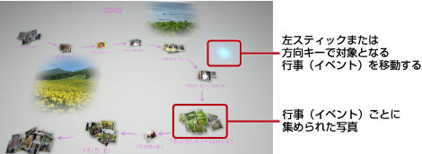

写真を見る
フォトギャラリーを起動すると、PS3™に保存されている全ての写真が自動的に行事（イベント）ごとに集まって表示されます。イベントは写真の撮影時間から解析されます。
イベントや写真を選択する
左スティックまたは方向キーで対象となるイベントを移動します。 ボタンを押すと複数のイベントまたは写真を選べます。
ボタンを押すと複数のイベントまたは写真を選べます。

表示を切りかえる
イベントを選んで ボタンを押すと、写真の表示が切りかわります。
ボタンを押すと、写真の表示が切りかわります。
ヒント
写真を全画面に表示しているときに ボタンを押すと、XMB™の
ボタンを押すと、XMB™の （フォト）の操作パネルが表示されます。フォトギャラリーでは操作できる項目が限られます。
（フォト）の操作パネルが表示されます。フォトギャラリーでは操作できる項目が限られます。
スライドショーで写真を見る
ライブラリーエリアのイベントやプレイリストを選んでボタンを押し、 （スライドショー）を選びます。
（スライドショー）を選びます。
表示された画面で次の設定をして、［開始する］を選びます。
| スライドショースタイル | スライドショーの表示パターンを選ぶ |
|---|---|
| スライドショーの速さ | スライドショーの速さを選ぶ |
| 並べかえ | 写真の表示順を選ぶ |
| スライドショーBGM | スライドショーのBGMをフォトギャラリーに収録されている曲から選ぶ |
 |
スライドショーのBGMをXMB™の （ミュージック）から選ぶ （ミュージック）から選ぶ |
ヒント
- スライドショーをしているときにボタンを押すと、XMB™の（フォト）の操作パネルが表示されます。
- ライブラリーエリアで写真を一覧表示にしたときは、［並べかえ］から［似てる順］を選ぶことができます。
BGMを変更する
フォトギャラリーで流れている音楽を変更したいときは、ワイヤレスコントローラのPSボタンを押してXMB™（クロスメディアバー）を表示し、（ミュージック）から変更したい音楽ファイルを選びます。
ヒント
- スライドショーのBGMを変更するときは、スライドショーを開始する前に表示される設定画面で変更してください。
- BGMを記録メディアに保存されている音楽に変更したあとにスライドショーをすると、スライドショー終了後に記録メディアの曲が再生されない場合があります。